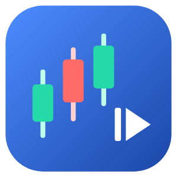
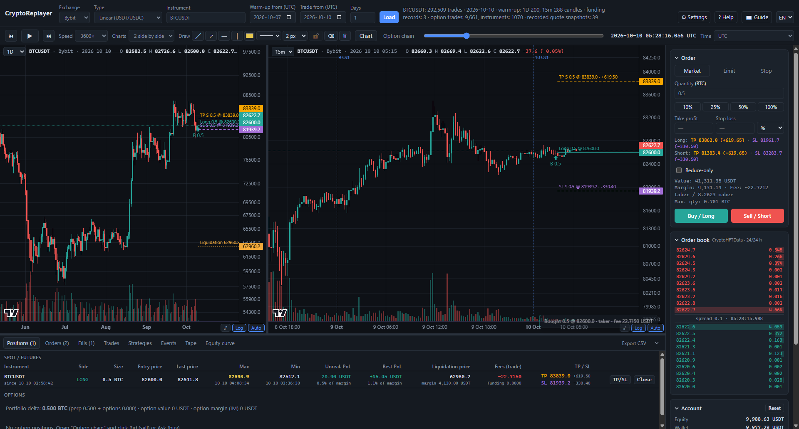

Prekybos simuliatorius su tikra Bybit ir Deribit istorija · Симулятор торговли на реальной истории Bybit и Deribit

CryptoReplayer replays real historical trades from Bybit and Deribit, trade by trade, and lets you practise trading on them as if the market were live – with fees, funding, slippage, latency, leverage and liquidation, an option chain, a strategy builder and a scanner. It is a simulator: no real money is used and no orders are sent to an exchange. Market data is free; no account or API key is needed.
CryptoReplayer atkuria tikrus istorinius Bybit ir Deribit sandorius vieną po kito ir leidžia jais prekiauti taip, lyg rinka vyktų dabar – su komisiniais, funding, slydimu, vėlinimu, svertu ir likvidavimu, opcionų grandine, strategijų konstruktoriumi ir skeneriu. Tai simuliatorius: tikri pinigai nenaudojami, į biržas pavedimai nesiunčiami. Rinkos duomenys nemokami, paskyros ar API rakto nereikia.
CryptoReplayer воспроизводит реальные исторические сделки Bybit и Deribit – сделку за сделкой – и позволяет торговать на них так, будто рынок идёт сейчас: с комиссиями, фандингом, проскальзыванием, задержкой, плечом и ликвидацией, опционной доской, конструктором стратегий и сканером. Это симулятор: реальные деньги не используются, ордера на биржи не отправляются. Рыночные данные бесплатны, аккаунт и API-ключ не нужны.
Questions, problems or suggestions: open an issue on GitHub. Please include the app version, your Windows version and, for errors, the file logs\server.log from the app's data folder. Answers to common questions are in the guide's FAQ.
Klausimai, problemos ar pasiūlymai: sukurkite „issue“ GitHub'e. Nurodykite programos versiją, Windows versiją, o klaidos atveju pridėkite failą logs\server.log iš programos duomenų aplanko. Atsakymai į dažnus klausimus – vadovo DUK.
Вопросы, проблемы или предложения: создайте issue на GitHub. Укажите версию программы, версию Windows, а при ошибке приложите файл logs\server.log из папки данных программы. Ответы на частые вопросы – в FAQ руководства.